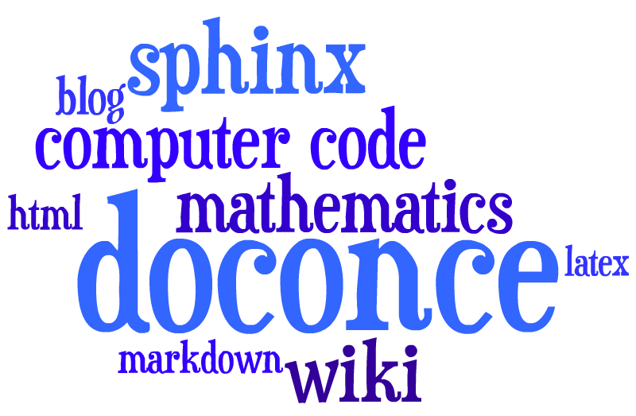
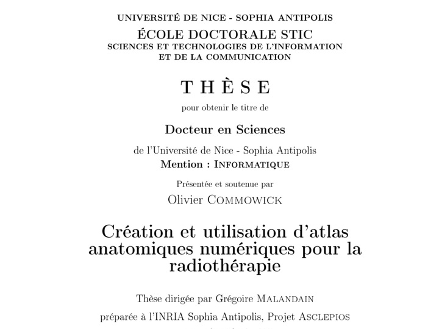
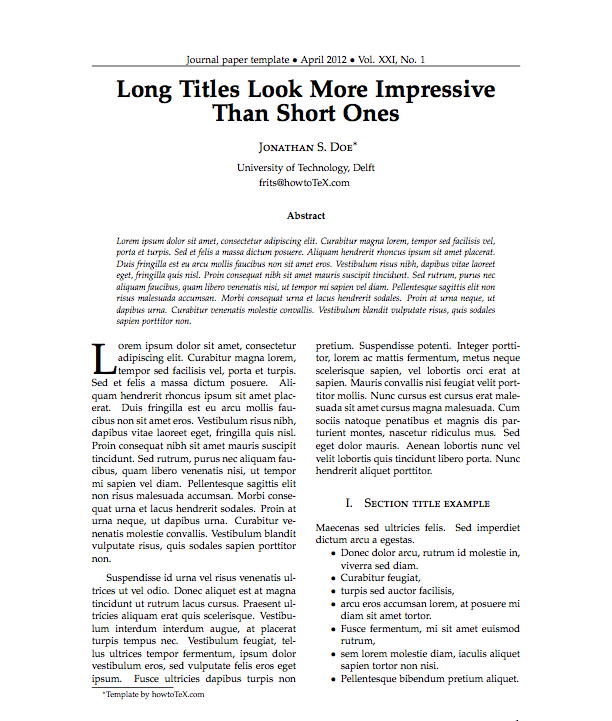

\def\FrameCommand{\colorbox{shadecolor}}\FrameRule0.6pt
\MakeFramed {\FrameRestore}\vskip3mm}{\vskip0mm\endMakeFramed}
\providecommand{\shadedquoteBlue}{}
\renewenvironment{shadedquoteBlue}[1][]{
\bgroup\rmfamily\fboxsep=0mm\relax
\begin{shadedskip}
\list{}{\parsep=-2mm\parskip=0mm\topsep=0pt\leftmargin=2mm
\rightmargin=2\leftmargin\leftmargin=4pt\relax}
\relax}{\endlist\end{shadedskip}\egroup}\begin{shadedquoteBlue}
\fontsize{9pt}{9pt}
\begin{Verbatim}
print 'Hello, World!'
\end{Verbatim}
Big late 1990s question: Will MS Word replace LaTeX? It never did!


MOOCs, Kahn Academy, ndla, H5P, Haiku Learning, Opigno, ...
LaTeX-for-paper and HTML-for-screen are two very different writing styles and technology platforms.
What tools should I use for scientific writing?


Suppose I write various types of scientific material,
and later want to collect the pieces into a larger document, maybe some book - is that at all feasible?
Probably not, but I have a solution 
equation*, equation, align*, align + eqnarray, split, alignat, ... (numerous!)equation*, equation, align*, alignequation*, equation, align*, alignequation*, equation, align*equation*, equation, eqnarray*, align* (but no labels)subfigure)Highly non-trivial to translate from/to LaTeX!
I am used to write LaTeX paper/book-style with lots of cross-references and floating figures, code snippets, tables, algorithms, but now I want to convert to IPython notebooks.
Must have fixed figures, code snippets, tables. No algorithm environment, cross-referencing, equation referencing. All code needed for a snippet to run must be included. It's a different writing style, but lots of new opportunities.
montage for png, gif, jpeg; pdftk, pdfnup, and pdfcrop for PDF).align environment, recall that Sphinx, Markdown, and MediaWiki cannot handle this, although they have LaTeX math support.offers minimalistic typing, great flexibility wrt format, especially for scientific writing with much math and code.
At any time one can divorce from DocOnce and marry one of the output formats, such as LaTeX or Sphinx. The generated code is clean.
TITLE: Some Title
AUTHOR: name1 at institution1, with more info & institution2
AUTHOR: name2 email:name2@web.com at institution
DATE: today
# A table of contents is optional:
TOC: on
Title and authors must have all information on a single line!
__Abstract.__
Here goes the abstract...
Or:
__Summary.__
Here goes the summary...
Headings are surrounded by = signs:
======= This is an H1/chapter heading =======
===== This is an H2/section heading =====
===== This is an H3/subsection heading =====
=== This is an H4/paragraph heading ===
__This is a paragraph heading.__
Result:
This is a paragraph heading.
* Bullet list items start with `*`
and may span several lines
* *Emphasized words* are possible
* _Boldface words_ are also possible
* color{red}{colored words} too
* `inline verbatim code` is featured
o and sublists with enumerated items starting with `o`
o items are just indented as you would do in email
This gets rendered as
* and may span several linesinline verbatim code is featured
o# Insert index items in the source
idx{key word1} idx{key word2}
# Label
===== Some section =====
label{this:section}
# Make reference
As we saw in Section ref{this:section}, references, index
items and labels follow a syntax similar to LaTeX
but without backslashes.
# Make reference to equations
See (ref{eq1})-(ref{myeq}).
# Make hyperlink
"some link text": "https://github.com/doconce/doconce"
# Hyperlink with complete URL as link text
URL: "https://github.com/doconce/doconce"
Figures with HTML and LaTeX size info, and caption: everything on one line
FIGURE: [figdir/myfig, width=300 frac=1.2] My caption. label{fig1}
Movies are also supported:
MOVIE: [http://youtu.be/IDeGDFZSYo8, width=420 height=315]
and rendered as
Inline math as in LaTeX:
...where $a=\int_{\Omega}fdx$ is an integral.
gets rendered as ...where \( a=\int_{\Omega}fdx \) is an integral.
An equation environment is surrounded by !bt and !et tags,
the rest is plain LaTeX:
!bt
\begin{align}
\frac{\partial u}{\partial t} &= \nabla^2 u,
label{a:eq}\\
\nabla\cdot\pmb{v} & = 0
label{b:eq}
\end{align}
!et
which is rendered as
$$ \begin{align} \frac{\partial u}{\partial t} &= \nabla^2 u, \label{c:eq}\\ \nabla\cdot\pmb{v} & = 0 \label{d:eq} \end{align} $$Limit math environments to
\[ ... \]
\begin{equation*}
\end{equation*}
\begin{equation}
\end{equation}
\begin{align*}
\end{align*}
\begin{align}
\end{align}
align with labelsCode is enclosed in !bc and !ec tags:
!bc pycod
def solver(I, a, T, dt, theta):
"""Solve u'=-a*u, u(0)=I, for t in (0,T] with steps of dt."""
dt = float(dt); N = int(round(T/dt)); T = N*dt
u = zeros(N+1); t = linspace(0, T, N+1)
u[0] = I
for n in range(0, N):
u[n+1] = (1 - (1-theta)*a*dt)/(1 + theta*dt*a)*u[n]
return u, t
!ec
This gets rendered as
def solver(I, a, T, dt, theta):
"""Solve u'=-a*u, u(0)=I, for t in (0,T] with steps of dt."""
dt = float(dt); N = int(round(T/dt)); T = N*dt
u = zeros(N+1); t = linspace(0, T, N+1)
u[0] = I
for n in range(0, N):
u[n+1] = (1 - (1-theta)*a*dt)/(1 + theta*dt*a)*u[n]
return u, t
We recommend to copy as much code as possible directly from the source files:
@@@CODE path/to/file
@@@CODE path/to/file fromto: start-regex@end-regex
For example, copying a code snippet starting with def solver( and
ending with (line not included) def next(x, y, is specified by
start and end regular expressions:
@@@CODE src/somefile.py fromto: def solver\(@def next\(x,\s*y,
.py: pypro if complete file, pycod if snippet.pyopt: visualized execution via the Online Python Tutor.f, .f90, f.95: fpro and fcod.cpp, .cxx: cpppro and cppcod.c: cpro and ccod.*sh: shpro and shcod.m: mpro and mcodptex2tex: between 40+ code styles in LaTeXpygments is used for code in HTML (ca 10 styles)With !bc pyoptpro or a file *.pyopt, the code applies the
Online Python Tutor for displaying
program flow and state of variables:
With !bc pyscpro or a file *.pysc, the code is typeset in
a sage cell:
Works only in Sphinx documents (but HTML support is possible).
Can take a DocOnce source and transform to an IPython notebook with source
|--------------------------------|
|time | velocity | acceleration |
|---r-------r-----------r--------|
| 0.0 | 1.4186 | -5.01 |
| 2.0 | 1.376512 | 11.919 |
| 4.0 | 1.1E+1 | 14.717624 |
|--------------------------------|
Gets rendered as
| time | velocity | acceleration |
|---|---|---|
| 0.0 | 1.4186 | -5.01 |
| 2.0 | 1.376512 | 11.919 |
| 4.0 | 1.1E+1 | 14.717624 |
newcommands*.tex files contain newcommandsLables, citations, index, and bibliography follow the ideas of LaTeX, but without backslashes:
===== My Section =====
label{sec:mysec}
idx{key equation} idx{$\u$ conservation}
We refer to Section ref{sec:yoursec} for background material on
the *key equation*. Here we focus on the extension
!bt
\begin{equation}
\Ddt{\u} = \mycommand{v} label{mysec:eq:Dudt}
\end{equation}
!et
Equation (ref{mysec:eq:Dudt}) is important, see
cite{Larsen_et_al_2002,Johnson_Friedman_2010a}.
Also, cite{Miller_2000} supports such a view.
Figure ref{mysec:fig:myfig} displays the features.
FIGURE: [fig/myfile, width=600] My figure. label{mysec:fig:myfig}
===== References =====
BIBFILE: papers.pub
The papers.pub file must be in Publish
format (easy to make from BibTeX).
DocOnce offers a special format for exercises, problems, projects, and examples:
===== Problem: Flip a Coin =====
label{demo:ex:1}
files=flip_coin.py, flip_coin.pdf
solutions=mysol.txt, mysol_flip_coin.py
keywords = random numbers; Monte Carlo simulation
!bsubex
Make a program that simulates flipping a coin $N$ times.
!bhint
Use `r = random.random()` and define head as `r <= 0.5`.
!ehint
!esubex
!bsubex
Compute the probability of getting heads.
!bans
0.5.
!eans
!esubex
a) Make a program that simulates flipping a coin \( N \) times.
Hint.
Use r = random.random() and define head as r <= 0.5.
b) Compute the probability of getting heads.
Answer. 0.5.
Filenames: flip_coin.py, flip_coin.pdf.
All exercises, problems, and projects in a document are parsed and available in a data structure (list of dicts) for further processing (e.g. making a book of problems).
[{'answer': '',
'closing_remarks': '',
'file': ['flip_coin.py', 'flip_coin.pdf'],
'hints': [],
'keywords': ['random numbers', 'Monte Carlo simulation'],
'label': 'demo:ex:1',
'solution_file': ['mysol.txt', 'mysol_flip_coin.py'],
'subex': [{'answer': '',
'file': None,
'hints': ['Use `r = random.random()` ...'],
'solution': '',
'text': 'Make a program that simulates ...'},],
'title': 'Flip a Coin',
'type': 'Problem'}]
FORMAT variable can be used to test on format, e.g.
Such environments may light up the document, but can be disturbing too. Some admon styles have icons.
More details can be separated from the rest.
Tasks:
Conclusion:
xrref[internal][latex cite][external]
...as shown in ref[Section ref{sec:eqs}][ in cite{math_eqs_2020}][
the document "Mathematical Equations":
"http://some.net/doc/matheqs.html" cite{math_eqs_2020}].
Very effective way to generate slides from running text:
!split wherever you want a new slide to begin!bpop and !epop around elements to pop up in sequence (or insert |\pause| inside code blocks)= or 5 = in headings (H2 or H3)!split
===== Headline =====
* Key point 1
* Key point 2
* Key point 3: Although long
bullet points are not recommended in general, we need
it here for demonstration purposes to investigate
what happens with the slide layout where there is
so much text under one point
FIGURE: [fig/teacher1, width=100 frac=0.4]
Key equation:
!bt
\[ -\nabla^2 u = f \quad\hbox{in }\Omega \]
!et
And maybe a final comment?
!split
===== Next slide... =====
Last page gets rendered to
Key equation:
$$ -\nabla^2 u = f \quad\hbox{in }\Omega $$And maybe a final comment?
Example with a bullet list to the left and a figure to the right (two cells: 00 and 01):
!split
===== Headline =====
!bslidecell 00
!bpop
* Key point 1
* Key point 2
* Key point 3
!epop
!bpop
!bt
\[ -\nabla^2 u = f \quad\hbox{in }\Omega \]
!et
!epop
!eslidecell
!bslidecell 01
FIGURE: [fig/broken_pen_and_paper, width=400 frac=0.8]
!eslidecell
!split
===== Next slide... =====
Last page gets rendered to
Run in terminal window:
doconce format html doconcefile
# Solarized HTML style
doconce format html doconcefile --html_solarized
# Control pygments typesetting of code
doconce format html doconcefile --pygments_html_style=native
# Or use plain <pre> tag for code
doconce format html doconcefile --no_pygments_html
# Further making of slides
doconce slides_html doconcefile reveal --html_slide_theme=darkgray
Two formats of blog posts are supported:
equation and align work in Wordpress :-)For wordpress, add --wordpress:
doconce format html doconcefile --wordpress
and paste the code into the text area.
doconce format pdflatex doconcefile --latex_code_style=lst
pdflatex doconcefile
bibtex doconcefile
pdflatex doconcefile
doconce format sphinx doconcefile
# Autocreate sphinx directory
doconce sphinx_dir theme=pyramid doconcefile
# Copy files and build HTML document
python automake-sphinx.py
google-chrome sphinx-rootdir/_build/html/index.html
Much easier than running the Sphinx tools manually!
Only MediaWiki supports math.
doconce format mwiki doconcefile
Recommended site:
Publishing of "official" documents:
doconce format pandoc doconcefile # (Pandoc extended) Markdown
doconce format gwiki doconcefile # Googlecode wiki
doconce format cwiki doconcefile # Creole wiki (Bitbucket)
doconce format rst doconcefile # reStructuredText
doconce format plain doconcefile # plain, untagged text for email
git clone + python setup.py installpreprocess and makolatex, sphinx, pandoc, etc. (see the Installation description)preprocess and mako are needed :-)doconce latex2doconce helps the translation\[ \], equation, equation*, align, align* and nothing more for equations\includegraphics, have captions after graphics, use short figure captions, position exactly where neededpageref commandspdflatex or xetex\href for links (and insert links frequently)bm package for boldface \( \boldsymbol{u} \)Figures and movies:
latex, PDF for pdflatex, PNG, GIF or JPEG for HTML formats (html, and HTML output from sphinx, rst, pandoc). One can omit the figure file extension and doconce will pick the most appropriate file for the given output format.doconce combine_images to combine several images into one.fig or fig-X, where X is some short logical name for the current document.mov or mov-X.\boldsymbol{u} gives nicer boldface typesetting of math symbols than the alternatives \boldsymbol{u} and \pmb{u}.\boldsymbol{u} is not supported and therefore automatically replaced by \boldsymbol{u} by DocOnce.\<font color="blue">formula</font> in math expressions to color a part.doconce spellcheck *.do.txt to automatically spellcheck files.For output formats different from latex, pdflatex, and html:
align math environments: pandoc and mwiki cannot refer to them.sphinx output requires=) comes section (7 =), then subsection (5 =), then paragraph (3 =). Do not make jumps in this progression.=== ... ===) and after subsection and section headings.